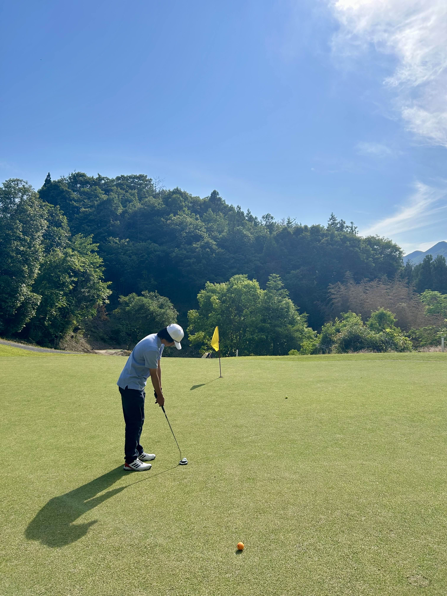
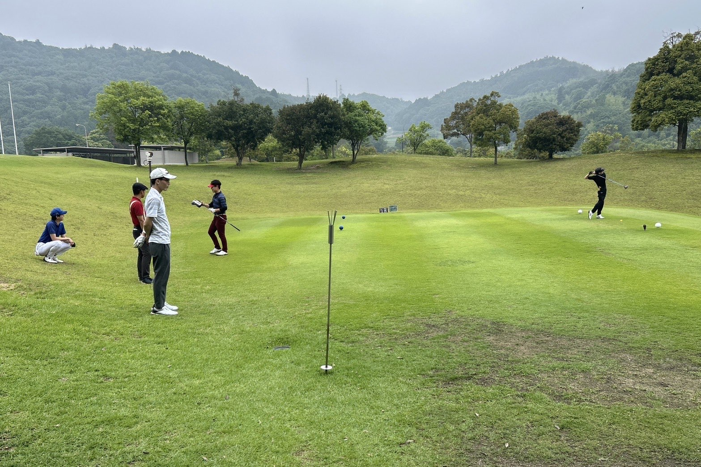
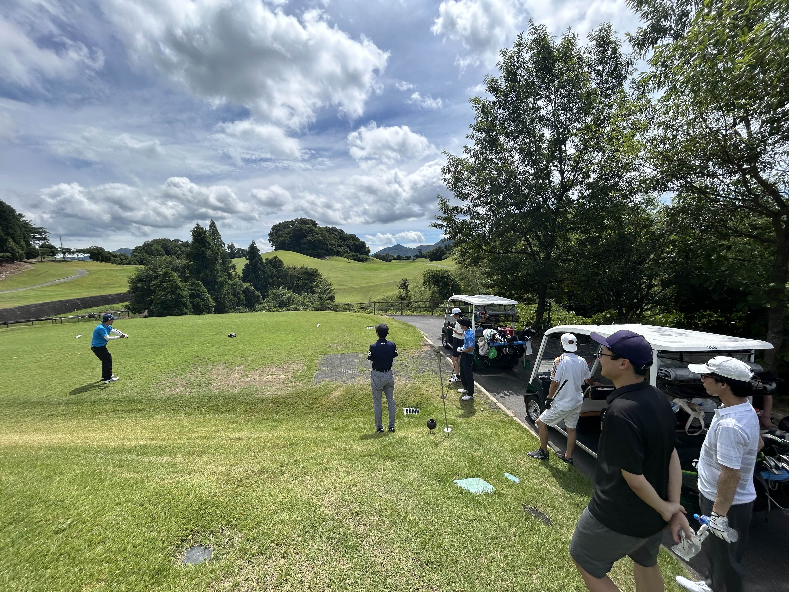
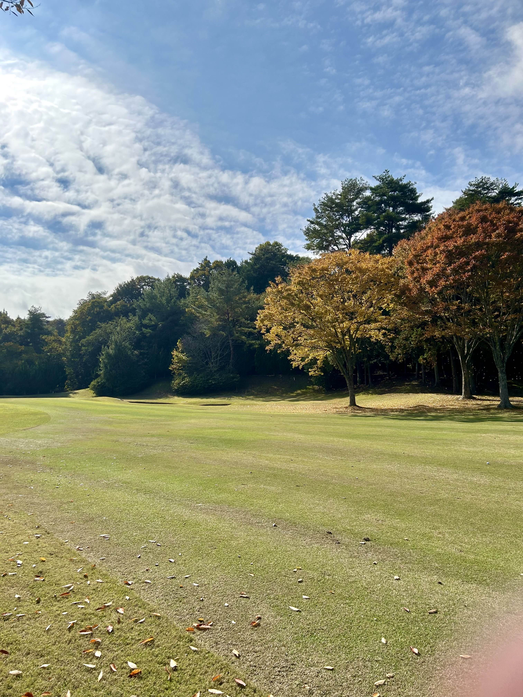
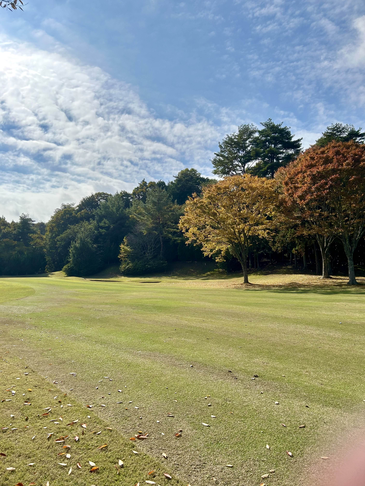
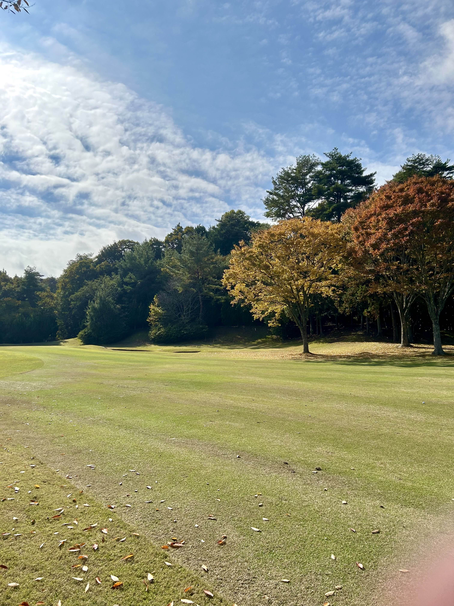
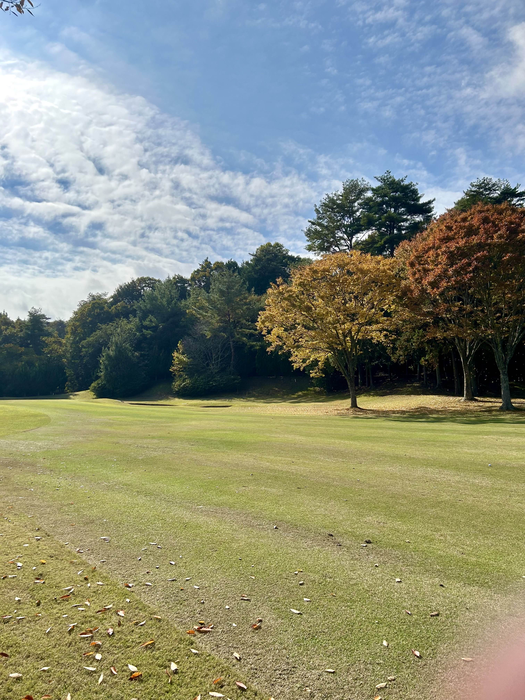

ギャラリー
練習風景・大会写真・合宿などの様子をまとめています。



 



HIROSHIMA UNIVERSITY GOLF TEAM
1982年(創部44年目)
杉尾 健次郎
月、水、金の週三回
西条ヒルサイドゴルフ
15名
13:2
総合科学部 / 3年
コメント
総合科学部 / 3年
大学生からゴルフを始めました！
工学部 / 2年
ベストスコア更新目指して頑張ります
文学部 / 1年
ゴルフ経験は長いので頑張ります！ぜひ一緒にゴルフしましょう！
教育学/ 修士2年
結果で語れるゴルファーを目指しています！
工学 / 修士1年
卒業までに80目指します。
工学部 / 1年
ゴルフ経験は浅いですが、上達させるため頑張ります！
松山英樹を目指してます！
練習風景・大会写真・合宿などの様子をまとめています。

| 月 | イベント |
|---|---|
| 4月 | 新歓 |
| 5月 | ショートコース月例会 |
| 6月 | ショートコース月例会 |
| 7月 | 月例会 |
| 8月 | 中四国学生ゴルフ秋季2部校対抗戦 |
| 9月 | 夏期ゴルフ合宿 |
| 10月 | ショートコース月例会 |
| 11月 | 月例会 |
| 12月 | クリスマス月例会 |
| 1月 | ショートコース月例会 |
| 2月 | ショートコース月例会 |
| 3月 | 春期ゴルフ合宿 / 中四国学生ゴルフ春季2部校対抗戦 |
もちろんです！現在の部員のほとんどが大学からゴルフを始めました。プロのコーチはいませんが、上級生の先輩やOBが優しく教えるので安心してください。
部費は現在徴収していません！練習場のボール代は学生割引があります！初期費用は抑えられるようになっています。
入部当初は貸し出し用のクラブがありますので、すぐに購入する必要はありません。慣れてきたら、先輩から安く譲ってもらったり、中古ショップで揃えたりする人が多いです。
可能です。全体練習は週3回ですが、授業やバイトの予定に合わせて参加日を調整できます。試験期間中はオフになります。
入部希望・質問などはこちらへ：